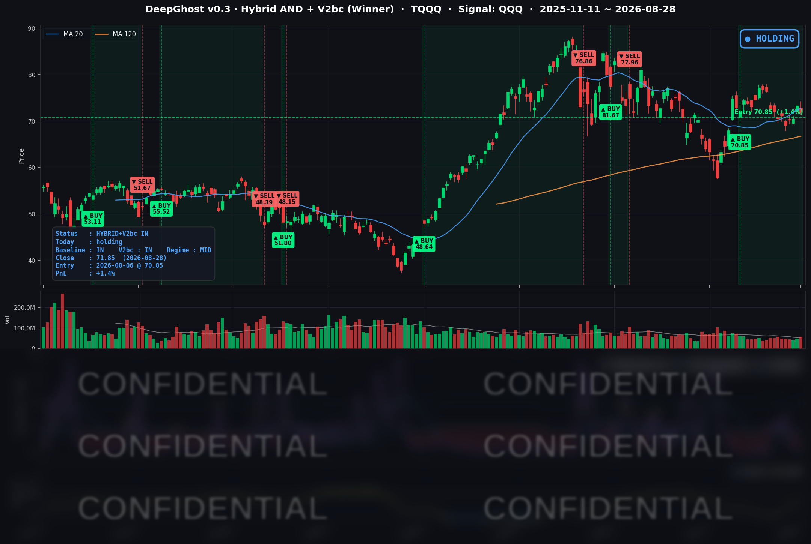

👻 매일 시그널과 히스토리를 홈페이지에서 한눈에 → www.ghostai.co.kr
살짝 매파적인 연준에 의한 숨고르기 장세가 이어졌습니다. 다만 10년물 급등은 불안합니다. 그럼에도 지수가 잘 버텨준 걸보면 투자 심리나 매수 자금 상황은 나쁘지 않습니다. 일단 유가가 떨어져야겠습니다. 그럼 상승 추세가 완성될 것입니다. 일희일비 하시지 마시고 룰대로 매매 하시면 됩니다.
📊 오늘의 매매 신호
| 항목 | 내용 |
|---|---|
| 오늘 할 일 | ✅ 아무것도 안 해도 됩니다 |
| 포지션 상태 | 📈 TQQQ 보유 중 (IN POSITION) |
| 매수 진입일 | 2026-08-06 (17거래일째) |
| 진입가 → 현재가 | $70.85 → $71.85 |
| 현재 포지션 수익 | +1.41% |
TQQQ 시그널 — IN POSITION
현재 상태: 매수 포지션 유지 중 | 이번 포지션 수익률 +1.41%

나스닥100이 -0.65% 내리고 TQQQ는 -1.98%로 증폭됐고, 전략의 평가손익은 어제 +3.46%에서 +1.41%로 후퇴했습니다. 8월 6일 진입가 $70.85 대비로는 여전히 플러스지만, 여유가 얇아진 것은 분명합니다.
모델은 아직 이 상승 흐름이 끝났다고 보지 않습니다. 오늘도 새로 사거나 판 신호는 나오지 않았고, 다음 거래일 시가에 체결될 대기 주문도 없습니다. 다만 완충이 넉넉하다는 뜻은 아닙니다.
참고로 월간으로 보면 8월은 좋은 달이었습니다. 나스닥100(QQQ) +4.13%, TQQQ +11.19%입니다. 8월 31일 월요일이 8월의 마지막 거래일입니다.
오늘 미국 시장 — 시황 요약
지수 마감
| 지수 | 종가 | 등락률 |
|---|---|---|
| S&P 500 | 7,711.76 | -0.25% |
| 나스닥 종합 | 26,402.42 | -0.52% |
| 다우존스 | 53,559.99 | -0.02% |
| 러셀 2000 | 2,972.37 | -1.39% |
| QQQ (나스닥100) | 716.43 | -0.65% |
숫자만 보면 아무 일도 없던 날처럼 보입니다. 하지만 장중 흐름은 달랐습니다. 나스닥은 장중 26,700까지 올랐다가 고점 대비 -1.12%를 반납하며 마감했습니다. 연준 의장 연설이 개장 직후였으니, 초반 강세가 연설을 소화하는 내내 깎여 나간 셈입니다.
가장 정직하게 반응한 것은 러셀 2000입니다. -1.39% 하락에 더해 장중 저가 그대로 마감했습니다. 반등 한 번 없이 바닥에서 끝났다는 것은, 오늘 하락의 원인이 개별 실적이 아니라 금리 재평가 그 자체였음을 가리킵니다. 소형주는 변동금리 부채 비중이 높아 단기 금리에 가장 민감한 집단입니다.
주간 기준으로는 S&P 500 +0.49%, 나스닥 +0.85%로 여전히 플러스이며, 러셀만 -1.51%로 역행했습니다.
국채 금리 동향
| 만기 | 수익률 | 전일 대비 |
|---|---|---|
| 3개월 | 3.730% | +5.2bp |
| 5년 | 4.481% | +8.5bp |
| 10년 | 4.720% | +4.8bp |
| 30년 | 5.206% | +1.5bp |
오늘 가장 중요한 숫자는 3개월물 3.730%입니다. 현재 연준 목표범위는 3.50~3.75%인데, 3개월물이 그 상단에서 불과 2bp 아래까지 올라왔습니다. 어제까지가 "인하를 전혀 반영하지 않은 상태"였다면, 오늘은 인상 가능성을 상당 부분 반영한 자리로 한 걸음 더 나간 것입니다.
커브 모양도 같은 이야기를 합니다. 5년물이 +8.5bp로 가장 크게 밀린 반면 30년물은 +1.5bp에 그쳤습니다. 장기물이 거의 안 움직였다는 것은 시장이 장기 물가 기대를 올린 게 아니라, 정책금리가 더 높은 수준에 더 오래 머문다고 다시 계산했다는 뜻입니다. 장단기 스프레드(10년-3개월)는 +99.0bp로 여전히 정상적인 우상향이고 역전은 없습니다.
연준 발언 & 금리 패스
케빈 워시 의장의 취임 후 첫 잭슨홀 기조연설이 있었습니다. 연설문 어디에도 금리를 올리겠다는 문장은 없습니다. 오히려 "저는 특정 결정이 아니라 하나의 원칙에 헌신합니다"라며 방향을 말하지 않겠다고 선언했고, 앞으로의 정책 예고는 "제한적이어야 한다"고 못 박았습니다. 그런데도 시장이 매긴 9월 인상 확률은 하루 만에 35%에서 57%로 뛰었습니다. 이유는 세 가지입니다.
첫째, 물가 판정 기준을 올렸습니다. 기저 물가가 목표를 향해 "명확하게, 충분한 속도로" 가고 있다는 확신이 필요하며 "그렇지 않다면 할 일이 남아 있다"고 했습니다. 연설에서 인용된 PCE 물가는 12개월 기준 3.7%인데 6개월 기준은 4.1%입니다. 최근 흐름이 지난 1년 평균보다 나쁘다는 것은, 물가가 잦아드는 게 아니라 다시 빨라지고 있다는 뜻입니다.
둘째, 고용 쪽 명분을 스스로 닫았습니다. 실업률 4.1%를 두고 "노동시장은 완전고용에 부합한다고 봅니다"라고 단정했습니다. 연준의 책무는 물가 안정과 최대 고용 두 가지인데, 완전고용이 달성됐다고 의장이 선언하면 고용을 이유로 금리를 내릴 근거가 사라집니다. 남는 것은 목표를 웃도는 물가뿐입니다.
셋째, 이른바 '연준 풋'을 말로 해체했습니다. "시장 참가자들이 다음 매매를 찾으려 주로 연준을 바라보는 체제를 용인해서는 안 된다"는 문장은, 앞으로 주가가 빠진다고 해서 정책 완화가 자동으로 따라오지는 않는다는 신호로 읽혔습니다.
정리하면 인상을 예고한 것이 아니라, 인상 쪽으로 문을 열어 둔 연설이었습니다.
오늘의 핵심 이슈
1. 지수는 조용했는데 안쪽은 요동쳤습니다. S&P 500은 -0.25%였지만 오늘 500개 종목이 서로 흩어진 정도는 지수 변동폭의 7.7배였습니다. 반도체 17개 종목은 단 하나도 오르지 못했고(평균 -2.94%), 대형 기술주 6종목은 하나도 빠지지 않았습니다(평균 +2.10%). 두 그룹의 격차 5%p는 최근 5년을 통틀어 손꼽히는 크기입니다. 지수가 평온했던 건 시장이 평온해서가 아니라, 한쪽이 빠진 만큼 다른 쪽이 올라 지수 수준에서 상쇄됐기 때문입니다.
2. 빠진 것은 반도체가 아니라 'AI에 물건을 파는 회사들' 전체였습니다. 낙폭 상위에는 반도체만 있는 게 아닙니다. 광통신(LITE -6.39%, COHR -5.48%), 데이터센터 전력설비(GNRC -6.84%, GEV -4.39%), 반도체 설계 소프트웨어(SNPS -4.79%)까지 함께 빠졌습니다. 결정적인 장면은 둘입니다. 마벨은 실적도 가이던스도 연간 목표도 모두 시장 예상을 넘겼는데 주가가 6~7% 하락했습니다. 기대가 이미 주가에 다 들어가 있으면 좋은 뉴스로도 더 오를 수 없다는 교과서적 사례입니다. 그리고 같은 뉴스에 정반대로 갈린 두 종목 — 아마존이 엔비디아 GPU 200만 개를 추가로 확보하겠다고 한 그 계약으로, 아마존은 +3.97%, 엔비디아는 -4.57%였습니다. 시장이 AI 투자를 칩 파는 쪽의 매출이 아니라 그것을 굴려 서비스를 파는 쪽의 규모 우위로 값 매겼다는 뜻입니다. 이 관점이 맞는지는 아직 모릅니다. 다만 오늘 시장이 그렇게 가격을 매겼다는 것은 사실입니다.
3. 다음 2주가 9월 금리를 결정합니다. 연준이 가장 신뢰하는 물가 지표인 8월 PCE는 9월 30일, 즉 FOMC가 끝난 2주 뒤에야 나옵니다. 따라서 9월 16일 결정은 9월 4일 고용보고서와 9월 11일 CPI 두 개의 숫자 위에서만 내려집니다. 의장이 완전고용을 선언한 직후라 해석 구도도 바뀌었습니다 — 고용이 강하면 인상 명분이 강해지고, 약하게 나와도 즉각적인 완화 기대로 이어지기는 어렵습니다. 위로는 열려 있고 아래로는 막혀 있는 비대칭입니다.
변동성 & 투자심리
VIX는 14.43으로 어제 14.51에서 오히려 내렸습니다. 최근 1년 252거래일 중 오늘보다 낮았던 날은 단 7일뿐입니다. 매파적 금리 재평가에 소형주는 저가 마감했는데 변동성 지표는 꿈쩍도 안 한 셈입니다.
거래량도 평범했습니다. QQQ는 20일 평균의 0.99배로, 이벤트다운 폭증이 없었습니다. 오늘의 하락은 패닉성 매도가 아니라 조용한 재계산이었습니다. 공포탐욕지수는 8월 28일자 확정 수치가 확인되지 않아 중립~약한 탐욕 구간으로만 읽는 것이 안전합니다.
매크로 & 원자재
| 품목 | 종가 | 일간 | 1년 |
|---|---|---|---|
| WTI 원유 | $83.44 | -0.11% | +30.07% |
| Brent 원유 | $88.29 | -1.57% | +29.74% |
| 금 ETF (GLD) | $408.89 | -3.24% | +30.76% |
오늘 자산군 중 가장 크게 밀린 것은 금입니다. 금은 이자를 낳지 않으므로 금리가 오르면 들고 있는 비용이 커집니다. 매파적 연설 → 금리 상승 → 금 하락은 교과서적 연결입니다. 다만 1년 기준으로는 여전히 +30% 위라, 추세가 꺾였다기보다 강한 상승분의 되돌림 구간으로 보는 편이 맞습니다.
유가가 1년 새 30% 오른 것이 지금 물가 그림의 배경입니다. 헤드라인 물가(3.7%)가 근원 물가(3.3%)를 웃도는 것은 에너지·식료품이 밀어 올리고 있기 때문입니다. 다만 최근 한 주는 -4.16%로 진정됐습니다.
캘린더로는 9월 4일 고용보고서, 9월 8일 캐나다 보복관세 발효(276억 달러 규모, 철강·알루미늄 50%), 9월 11일 CPI, 9월 15~16일 FOMC(점도표 동반)가 차례로 놓여 있습니다. 관세는 상품 물가를 밀어 올리는 요인이라, 물가가 목표를 웃도는 국면에서 연준의 선택지를 더 좁힙니다.
주요 종목 동향
| 종목 | 종가 | 등락률 | 비고 |
|---|---|---|---|
| AMZN | 266.43 | +3.97% | AWS-엔비디아 GPU 200만 개 추가 계약 소화, AWS 매출 전년 대비 +37% |
| NFLX | 81.72 | +2.35% | 대형 기술주 쪽으로의 자금 이동 수혜 |
| GOOGL | 346.59 | +1.74% | 같은 축의 수혜 |
| MSFT | 513.53 | +1.68% | 같은 축의 수혜 |
| AAPL | 319.70 | +1.63% | 거래량 20일 평균의 0.81배 — 조용한 상승 |
| META | 578.02 | +1.21% | 장중 고가 589.19 대비 -1.90% 되밀림 |
| MU | 932.86 | -0.27% | 반도체 중 방어적, 장중 변동폭은 컸음 |
| QCOM | 164.19 | -0.36% | 반도체 중 선방 |
| AVGO | 368.79 | -0.74% | 반도체 중 선방 |
| TSLA | 348.75 | -1.71% | 금리 민감 성장주로 동반 하락 |
| INTC | 89.47 | -2.85% | 반도체 동반 약세 |
| NVDA | 217.55 | -4.57% | 어제 실적 급등(+8.74%) 절반 이상 반납. 거래량 20일 평균의 1.55배 |
- 커버리지 안에서도 오늘의 분기선이 그대로 나타났습니다. 오른 6종목은 전부 반도체가 아닌 대형 기술주이고, 내린 6종목 중 5개가 반도체입니다.
- 거래량이 크게 늘어난 것은 엔비디아 하나뿐입니다. 나머지는 대부분 평균의 0.7~1.2배였습니다. 오늘의 매도는 광범위한 투매가 아니라 엔비디아를 중심으로 한 AI 포지션 정리의 성격이었습니다.
Ghost.AI — Quantitative AI Investment
Model: DeepGhost v0.3 | Transformer-Based Deep Learning
Coverage: 13 tickers | Updated every trading day after US market close
⚠️ 본 자료는 정보 제공 목적으로만 작성되었으며 투자 권유가 아닙니다. 모든 투자의 책임은 투자자 본인에게 있습니다. 과거 성과가 미래 수익을 보장하지 않습니다.
[유의사항]
- 본 서비스는 불특정 다수를 대상으로 발행되는 단방향 정보 제공 서비스이며, 투자자 개인의 재산 상황·투자 목적·위험 선호도를 반영한 개별 투자 조언이 아닙니다.
- 고스트에이아이 주식회사는 고객과 쌍방향 의사소통(개별 상담, 맞춤형 자문 등)을 제공하지 않습니다.
- 본 콘텐츠는 투자 권유 또는 매매 주문의 청약·청약의 권유에 해당하지 않으며, 최종 투자 판단 및 그에 따른 손익의 책임은 전적으로 투자자 본인에게 있습니다.
고스트에이아이 주식회사